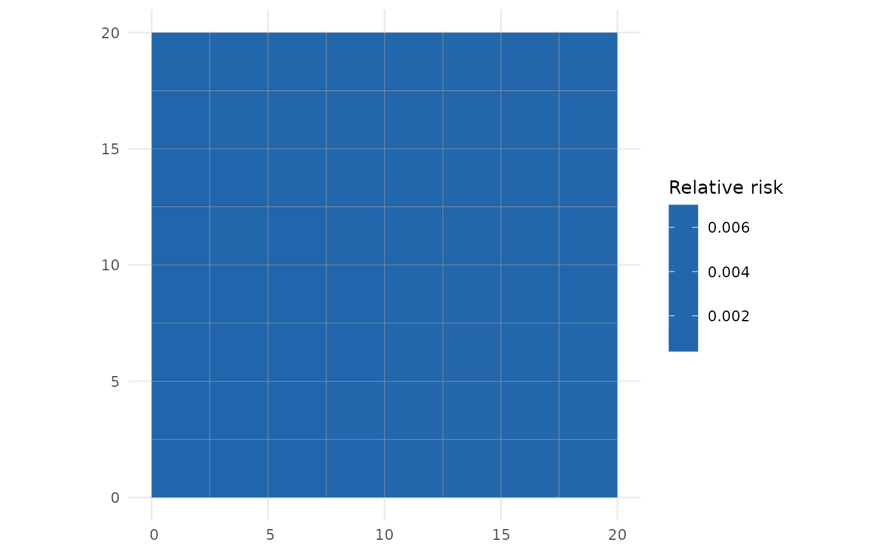

Predict relative risk from a fitted SDALGCP2 model
Arguments
- object
- type
"discrete"for region-level inference or"continuous"for a spatially continuous surface.- sampler
"mcmc"(MALA, default) or"laplace"(fast Gaussian approximation, no MCMC).- cellsize
grid spacing for continuous prediction (ignored if
pred.locsupplied).- pred.loc
optional data frame of prediction coordinates (
x,y) for continuous prediction.- control.mcmc
optional MCMC controls; defaults to those used at fitting.
- ...
unused.
Value
an sf (class c("SDALGCP2_pred", "sf", "data.frame")) with
one row per location – polygons for type = "discrete", grid-cell
points for type = "continuous" – carrying the posterior mean and
standard error of two relative-risk quantities:
relative_risk,relative_risk_sethe relative risk \(\exp(d'\beta + S)\) – the fitted risk relative to the offset baseline, combining the covariate effect and the residual spatial variation. This is the headline disease-mapping quantity.
adjusted_rr,adjusted_rr_sethe covariate-adjusted relative risk \(\exp(S)\) – the purely spatial relative risk that remains after holding the covariates fixed (the spatial signal the covariates do not explain).
The full posterior draws are retained as object attributes so that
exceedance and map_exceedance can be computed for
either quantity. Map a column with plot.SDALGCP2_pred.
Examples
# \donttest{
data(sdalgcp_data)
fit <- sdalgcp(cases ~ x1 + offset(log(pop)), data = sdalgcp_data,
control = sdalgcp_control(n_sim = 2000, burnin = 500, thin = 5,
reanchor = 0))
## region-level (discrete) prediction: an sf you can map or st_write()
pr <- predict(fit, type = "discrete")
head(pr) # relative_risk / adjusted_rr (+ standard errors)
#> Simple feature collection with 6 features and 8 fields
#> Geometry type: POLYGON
#> Dimension: XY
#> Bounding box: xmin: 0 ymin: 0 xmax: 15 ymax: 2.5
#> CRS: NA
#> region cases x1 pop geometry relative_risk
#> 1 1 2 -2.03331626 3840 POLYGON ((0 0, 2.5 0, 2.5 2... 0.0005081073
#> 2 2 3 -1.64601792 3985 POLYGON ((2.5 0, 5 0, 5 2.5... 0.0007222510
#> 3 3 1 -1.25871959 2236 POLYGON ((5 0, 7.5 0, 7.5 2... 0.0007493540
#> 4 4 0 -0.87142125 846 POLYGON ((7.5 0, 10 0, 10 2... 0.0011510783
#> 5 5 3 -0.48412292 874 POLYGON ((10 0, 12.5 0, 12.... 0.0024677851
#> 6 6 12 -0.09682458 2231 POLYGON ((12.5 0, 15 0, 15 ... 0.0050585377
#> relative_risk_se adjusted_rr adjusted_rr_se
#> 1 0.0002125157 1.059460 0.4431190
#> 2 0.0003028569 1.157535 0.4853820
#> 3 0.0002966975 0.923103 0.3654912
#> 4 0.0005515824 1.089896 0.5222644
#> 5 0.0009368453 1.795992 0.6818123
#> 6 0.0012664614 2.829690 0.7084446
plot(pr, variable = "relative_risk")

## continuous surface on a grid
pr_c <- predict(fit, type = "continuous", cellsize = 1)
# }